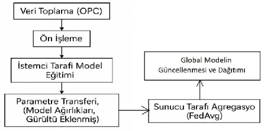
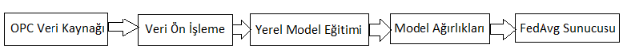
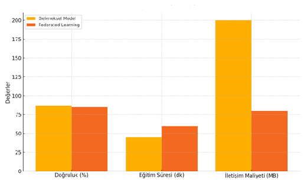
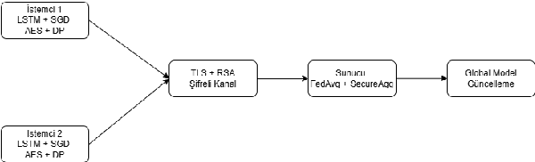
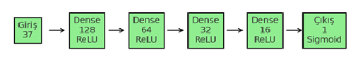
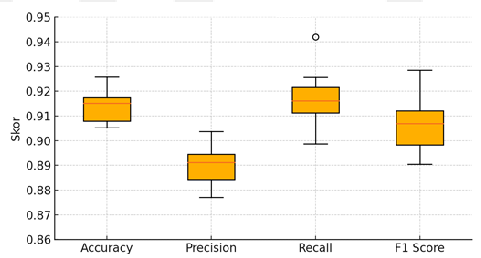
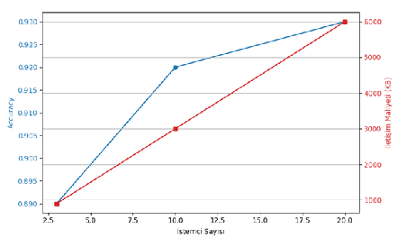
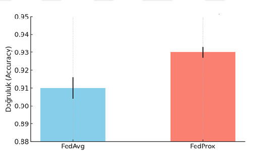
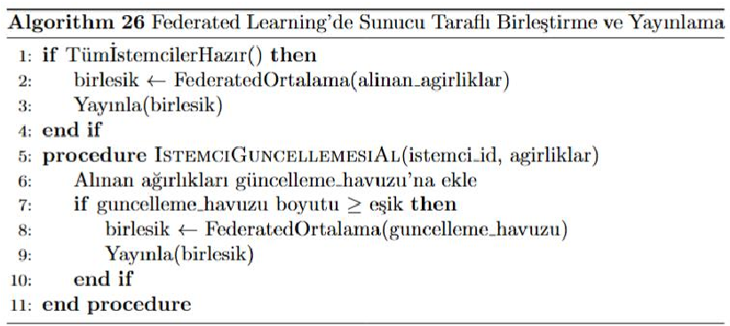

Kestirimci bakım
Üretim hatlarındaki makinelerin arıza ve performans dalgalanmalarını, her makinenin kendi üzerinde analiz yaparak yerel model güncellemeleriyle genel öğrenme sürecine katkı verdiği bir mimariyle ele almak.
TBD İstanbul Bilişim Yıldızları 2026 Aday Projesi
Bu proje, kablo üretim hattından OPC UA ile alınan gerçek sensör verilerini federe öğrenme mimarisiyle işler. Ham veri merkezi sunucuya taşınmaz; makineler yerelde öğrenir, sunucu yalnızca model güncellemelerini birleştirir.
Gerçek hayat problemi
Modern üretim hatlarında sıcaklık, basınç, hız, çap ve çekme kuvveti gibi parametreler ürün kalitesini ve makine sağlığını doğrudan etkiler. Geleneksel merkezi yapay zekâ yaklaşımı, bu verileri tek bir sunucuya taşımayı gerektirir; bu da stratejik üretim verisi için güvenlik, bant genişliği ve maliyet riski doğurur.
Bu çalışmada ham üretim verisi fabrika dışına çıkarılmadan analiz yapılabilecek dağıtık bir mimari önerildi. Amaç, üretim hattında oluşabilecek kalite sapmalarını ve bakım ihtiyacını erken yakalarken veri egemenliğini korumaktır.
Tanıtım videosu
Yarışma başvurusu için hazırlanan tanıtım videosu liste dışı YouTube bağlantısı üzerinden izlenebilir.
Amaç ve hedefler
Üretim hatlarındaki makinelerin arıza ve performans dalgalanmalarını, her makinenin kendi üzerinde analiz yaparak yerel model güncellemeleriyle genel öğrenme sürecine katkı verdiği bir mimariyle ele almak.
Üretim hatlarındaki kalite sapmalarını erken aşamada tespit edebilen, her hatta yerel olarak çalışan dağıtık modeller geliştirmek.
Üretim verisini yerel makinelerde işleyip yalnızca model güncellemelerini paylaşan, diferansiyel gizlilik ve güvenli toplama protokolleriyle güçlendirilmiş bir mimari kurmak.
Merkezi modelleme ihtiyacını ortadan kaldırarak, daha ölçeklenebilir ve sürdürülebilir endüstriyel yapay zekâ çözümleri sunmak.
Yerli, milli ve özgün yönler
Bursa Teknik Üniversitesi Bilgisayar Mühendisliği Anabilim Dalı’nda, Türk araştırmacı tarafından Türk danışman gözetiminde tamamlanan yüksek lisans tezine dayanmaktadır. Fikri ve sınai mülkiyet hakları araştırmacıya aittir.
Sistem, yurt içi bir kablo üretim tesisinden alınan gerçek OPC sensör verileri üzerinde uygulanmıştır. Veri yurt dışına çıkarılmamıştır.
Endüstriyel veri protokolü OPC UA ile federe öğrenmenin uçtan uca entegrasyonu, üretim verisi bağlamında nadir karşılaşılan özgün bir kombinasyondur.
Diferansiyel gizlilik, güvenli toplama, RSA-OAEP asimetrik şifreleme ve TLS ile veri ve model parametreleri katmanlı biçimde korunur.
Asenkron güncelleme yapısı, daha sınırlı donanıma sahip üretim cihazlarının da öğrenme sürecine katılmasını sağlar.
Üretim verisi yurt dışı bulut sağlayıcılarına gönderilmeden fabrika içinde yerel olarak işlenir. Bu yaklaşım veri egemenliği açısından stratejik değer taşır.
Sistem mimarisi
Sistem mimarisi üç ana katmandan oluşur: OPC üzerinden veri toplama katmanı, istemcilerde yerel model eğitimi katmanı ve merkezi sunucuda FedAvg algoritmasıyla model birleştirme katmanı. İstemciden sunucuya aktarılan model ağırlıkları, diferansiyel gizlilik (Laplace gürültü ekleme) ve RSA-OAEP asimetrik şifrelemeyle korunur. TLS protokolü ile iletim güvenliği sağlanır.




Yöntem, teknolojiler ve araçlar
| Kütüphane / Teknoloji | Rolü |
|---|---|
| Python 3.9 | Geliştirme dili |
| TensorFlow 2.12.0 | Derin öğrenme ve FL modeli |
| TensorFlow Federated 0.20.0 | Federe öğrenme altyapısı |
| PyTorch + PySyft | Gizlilik koruyucu alternatif eğitim |
| scikit-learn 1.2.2 | Model değerlendirme ve validasyon |
| pandas 1.5.3, NumPy 1.24.2 | Veri işleme ve analiz |
| Flask 2.2.3 | Sunucu-istemci iletişimi |
| Kütüphane / Teknoloji | Rolü |
|---|---|
| OPC UA | Endüstriyel veri toplama protokolü |
| MSSQL | Veri tabanı |
| TLS / DTLS | İletim güvenliği |
| RSA-OAEP (2048 bit) | Asimetrik şifreleme |

Sayısal sonuçlar ve performans metrikleri
Model, her deney koşulu için en az 5 kez tekrarlanan testlerde doğruluk, precision, recall ve F1 score metrikleriyle değerlendirildi. Sonuçlar, gizlilik bütçesi sıkılaştıkça performansta beklenen düşüş olduğunu; buna rağmen sistemin kabul edilebilir ve tutarlı performans verdiğini gösterdi.
| Deney Koşulu | Accuracy | Precision | Recall | F1 Score |
|---|---|---|---|---|
| Epsilon=0.20, Batch=256 | 0.927 ± 0.004 | 0.912 ± 0.005 | 0.921 ± 0.005 | 0.918 ± 0.006 |
| Epsilon=0.10, Batch=512 | 0.911 ± 0.006 | 0.890 ± 0.007 | 0.915 ± 0.004 | 0.902 ± 0.005 |
| Epsilon=0.05, Batch=512 | 0.880 ± 0.009 | 0.860 ± 0.008 | 0.895 ± 0.007 | 0.877 ± 0.006 |
| İstemci Sayısı | Accuracy | F1 Score | Eğitim Süresi (sn) | İletişim Maliyeti (KB) |
|---|---|---|---|---|
| 3 | 0.89 | 0.87 | 180 | 900 |
| 10 | 0.92 | 0.91 | 220 | 3000 |
| 20 | 0.93 | 0.92 | 260 | 6000 |
| Yöntem | Doğruluk | F1 Skoru | İletişim Maliyeti |
|---|---|---|---|
| Merkezi Eğitim | 0.94 | 0.93 | Yok |
| Federe Öğrenme (aggregation=5) | 0.92 | 0.91 | 320 KB / tur |
Yorum: Federe öğrenme yaklaşımı, yaklaşık %2’lik doğruluk farkıyla veri gizliliğini koruma ve dağıtık çalışabilme gibi büyük avantajlar sağlamaktadır.




Yenilik ve farklılıklar
Hazır kıyaslama veri setleri yerine çalışan bir kablo üretim hattından OPC protokolüyle alınmış canlı sensör verileri kullanılmıştır.
Endüstriyel veri protokolü OPC UA ile federe öğrenmenin uçtan uca entegrasyonu uygulanmıştır.
Diferansiyel Gizlilik + Güvenli Toplama + RSA-OAEP + TLS birlikte uygulanmıştır.
İstemci donanımına göre senkron veya asenkron güncelleme arasında seçim yapılabilen yapı sunulmuştur.
Yalnızca FedAvg değil, FedProx ile de deneysel karşılaştırma yapılmıştır.
±%5 tolerans tabanlı oto-etiketleme, elle etiketleme ihtiyacını azaltarak büyük veri kümelerine uygulanabilirliği artırmıştır.
Etki gücü ve sektörel fayda
Toplumsal katma değer
Yurt dışı bulut sağlayıcılarına yüksek aidat ödeyemeyen işletmeler, kendi tesislerinde yerel yapay zekâ uygulamaları çalıştırabilir.
Stratejik üretim verileri yurt dışı sunuculara çıkmadan değer üretir. KVKK ve veri egemenliği ilkeleriyle uyumludur.
Plansız duruşların azalması, hammadde fire oranını ve karbon ayak izini düşürür. Hatalı üretim erken tespit edildiği için atık miktarı azalır.
Yerel veri mühendisliği, MLOps ve endüstriyel yapay zekâ uzmanlığı ihtiyacını artırır.
Tez kapsamında üretilen literatür ve kod tabanı, Türk akademisinin federe öğrenme alanındaki birikimine doğrudan katkı sunar.
Başarı, ölçülebilirlik ve sürdürülebilirlik
Hedef kitle, hizmet kapasitesi ve sınırlılıklar
Etik ve veri beyanı
Bu projede kullanılan üretim verileri, ilgili tesisin bilgisi dahilinde alınmış olup hiçbir kişisel veri içermemektedir. Yalnızca makine üretim parametreleri (sıcaklık, basınç, hız, çap, çekme kuvveti) ele alınmıştır. Veriler hiçbir aşamada yurt dışı sunuculara aktarılmamıştır.
Tez, Bursa Teknik Üniversitesi’nin abonesi olduğu intihal yazılımıyla denetlenmiş ve yönetmeliğin belirlediği eşik içinde kalmıştır. Tüm dış kaynaklar tez içinde APA formatında atıflanmıştır.